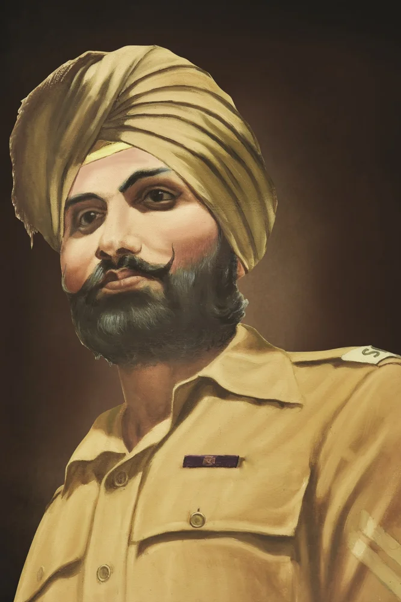
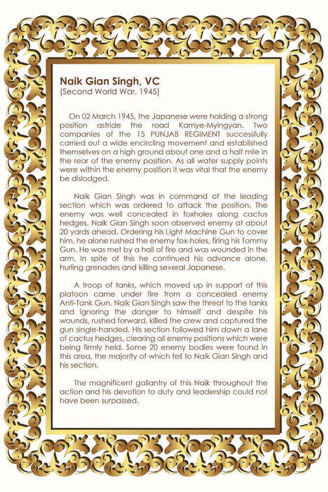

ਨਾਇਕ ਗਿਆਨ ਸਿੰਘ, ਵੀਸੀ

ਸਿਰਲੇਖ: Naik Gian Singh, VC
ਸ਼੍ਰੇਣੀ: ਹਾਲ ਆਫ਼ ਫ਼ੇਮ
Award: ਵਿਕਟੋਰੀਆ ਕਰਾਸ
Era / Action: Second World War, 1945
ਸ਼੍ਰੇਣੀ: ਹਾਲ ਆਫ਼ ਫ਼ੇਮ
Award: ਵਿਕਟੋਰੀਆ ਕਰਾਸ
Era / Action: Second World War, 1945
ਨਾਇਕ ਗਿਆਨ ਸਿੰਘ, ਵੀਸੀ
ਹਵਾਲਾ (ਲਿਖਤ): (ਦੂਜਾ ਵਿਸ਼ਵ ਯੁੱਧ, 1945) 02 ਮਾਰਚ 1945 ਨੂੰ, ਜਾਪਾਨੀ ਕਾਮੇ-ਮਿੰਗਯਾਨ ਸੜਕ 'ਤੇ ਇੱਕ ਮਜ਼ਬੂਤ ਸਥਿਤੀ 'ਤੇ ਬੈਠੇ ਹੋਏ ਸਨ। 15 ਪੰਜਾਬ ਰੈਜੀਮੈਂਟ ਦੀਆਂ ਦੋ ਕੰਪਨੀਆਂ ਨੇ ਸਫਲਤਾਪੂਰਵਕ ਇੱਕ ਵਿਆਪਕ ਘੇਰਾਬੰਦੀ ਲਹਿਰ ਨੂੰ ਅੰਜਾਮ ਦਿੱਤਾ ਅਤੇ ਦੁਸ਼ਮਣ ਦੀ ਸਥਿਤੀ ਦੇ ਪਿਛਲੇ ਹਿੱਸੇ ਵਿੱਚ ਲਗਭਗ ਡੇਢ ਮੀਲ ਉੱਚੀ ਜ਼ਮੀਨ 'ਤੇ ਆਪਣੇ ਆਪ ਨੂੰ ਸਥਾਪਿਤ ਕੀਤਾ। ਕਿਉਂਕਿ ਸਾਰੇ ਪਾਣੀ ਸਪਲਾਈ ਪੁਆਇੰਟ ਦੁਸ਼ਮਣ ਦੀ ਸਥਿਤੀ ਦੇ ਅੰਦਰ ਸਨ, ਇਹ ਜ਼ਰੂਰੀ ਸੀ ਕਿ ਦੁਸ਼ਮਣ ਨੂੰ ਉਖਾੜ ਦਿੱਤਾ ਜਾਵੇ। ਨਾਇਕ ਗਿਆਨ ਸਿੰਘ ਮੋਹਰੀ ਭਾਗ ਦੀ ਕਮਾਂਡ ਸੰਭਾਲ ਰਿਹਾ ਸੀ ਜਿਸ ਨੂੰ ਸਥਿਤੀ 'ਤੇ ਹਮਲਾ ਕਰਨ ਦਾ ਹੁਕਮ ਦਿੱਤਾ ਗਿਆ ਸੀ। ਦੁਸ਼ਮਣ ਕੈਕਟਸ ਹੇਜਾਂ ਦੇ ਨਾਲ ਲੂੰਬੜੀ ਦੇ ਛਿੱਲਿਆਂ ਵਿੱਚ ਚੰਗੀ ਤਰ੍ਹਾਂ ਛੁਪਿਆ ਹੋਇਆ ਸੀ। ਨਾਇਕ ਗਿਆਨ ਸਿੰਘ ਨੇ ਜਲਦੀ ਹੀ ਦੁਸ਼ਮਣ ਨੂੰ 20 ਗਜ਼ ਅੱਗੇ ਦੇਖਿਆ। ਉਸ ਨੂੰ ਢੱਕਣ ਲਈ ਆਪਣੀ ਲਾਈਟ ਮਸ਼ੀਨ ਗਨ ਦਾ ਆਰਡਰ ਦਿੰਦੇ ਹੋਏ, ਉਸਨੇ ਇਕੱਲੇ ਹੀ ਦੁਸ਼ਮਣ ਦੇ ਫੋਕਸ-ਹੋਲਜ਼ ਨੂੰ ਭੱਜਿਆ, ਆਪਣੀ ਟੌਮੀ ਗਨ ਨੂੰ ਗੋਲੀਬਾਰੀ ਕੀਤੀ। ਉਹ ਅੱਗ ਦੇ ਇੱਕ ਗੜੇ ਨਾਲ ਮਿਲਿਆ ਸੀ ਅਤੇ ਬਾਂਹ ਵਿੱਚ ਜ਼ਖਮੀ ਹੋ ਗਿਆ ਸੀ। ਇਸ ਦੇ ਬਾਵਜੂਦ ਉਸ ਨੇ ਇਕੱਲੇ ਹੀ ਆਪਣੀ ਤਰੱਕੀ ਜਾਰੀ ਰੱਖੀ, ਗ੍ਰਨੇਡ ਸੁੱਟੇ ਅਤੇ ਕਈ ਜਾਪਾਨੀਆਂ ਨੂੰ ਮਾਰ ਦਿੱਤਾ। ਟੈਂਕਾਂ ਦੀ ਇੱਕ ਟੁਕੜੀ, ਜੋ ਇਸ ਪਲਟੂਨ ਦੇ ਸਮਰਥਨ ਵਿੱਚ ਅੱਗੇ ਵਧੀ ਸੀ, ਇੱਕ ਗੁਪਤ ਦੁਸ਼ਮਣ ਐਂਟੀ-ਟੈਂਕ ਗਨ ਦੁਆਰਾ ਗੋਲੀਬਾਰੀ ਕੀਤੀ ਗਈ ਸੀ। ਨਾਇਕ ਗਿਆਨ ਸਿੰਘ ਨੇ ਟੈਂਕਾਂ ਦੇ ਖਤਰੇ ਨੂੰ ਦੇਖਿਆ ਅਤੇ ਆਪਣੇ ਲਈ ਖਤਰੇ ਨੂੰ ਨਜ਼ਰਅੰਦਾਜ਼ ਕੀਤਾ ਅਤੇ ਆਪਣੇ ਜ਼ਖ਼ਮਾਂ ਦੇ ਬਾਵਜੂਦ, ਅੱਗੇ ਵਧਿਆ, ਚਾਲਕ ਦਲ ਨੂੰ ਮਾਰ ਦਿੱਤਾ ਅਤੇ ਬੰਦੂਕ ਨੂੰ ਇਕੱਲੇ ਹੀ ਆਪਣੇ ਕਬਜ਼ੇ ਵਿਚ ਕਰ ਲਿਆ। ਉਸਦੇ ਹਿੱਸੇ ਨੇ ਕੈਕਟਸ ਹੇਜਜ਼ ਦੀ ਇੱਕ ਗਲੀ ਹੇਠਾਂ ਉਸਦਾ ਪਿੱਛਾ ਕੀਤਾ, ਦੁਸ਼ਮਣ ਦੀਆਂ ਸਾਰੀਆਂ ਸਥਿਤੀਆਂ ਨੂੰ ਸਾਫ਼ ਕਰ ਦਿੱਤਾ ਜੋ ਮਜ਼ਬੂਤੀ ਨਾਲ ਰੱਖੇ ਜਾ ਰਹੇ ਸਨ। ਇਸ ਇਲਾਕੇ ਵਿਚ ਦੁਸ਼ਮਣ ਦੀਆਂ 20 ਲਾਸ਼ਾਂ ਮਿਲੀਆਂ, ਜਿਨ੍ਹਾਂ ਵਿਚੋਂ ਜ਼ਿਆਦਾਤਰ ਨਾਇਕ ਗਿਆਨ ਸਿੰਘ ਅਤੇ ਉਸ ਦੇ ਹਿੱਸੇ ਵਿਚ ਡਿੱਗੀਆਂ। ਸਾਰੀ ਕਾਰਵਾਈ ਦੌਰਾਨ ਇਸ ਨਾਇਕ ਦੀ ਸ਼ਾਨਦਾਰ ਬਹਾਦਰੀ ਅਤੇ ਉਸ ਦੀ ਡਿਊਟੀ ਅਤੇ ਲੀਡਰਸ਼ਿਪ ਪ੍ਰਤੀ ਲਗਨ ਨੂੰ ਪਾਰ ਨਹੀਂ ਕੀਤਾ ਜਾ ਸਕਦਾ ਸੀ।
ਹਵਾਲਾ (ਲਿਖਤ): (ਦੂਜਾ ਵਿਸ਼ਵ ਯੁੱਧ, 1945) 02 ਮਾਰਚ 1945 ਨੂੰ, ਜਾਪਾਨੀ ਕਾਮੇ-ਮਿੰਗਯਾਨ ਸੜਕ 'ਤੇ ਇੱਕ ਮਜ਼ਬੂਤ ਸਥਿਤੀ 'ਤੇ ਬੈਠੇ ਹੋਏ ਸਨ। 15 ਪੰਜਾਬ ਰੈਜੀਮੈਂਟ ਦੀਆਂ ਦੋ ਕੰਪਨੀਆਂ ਨੇ ਸਫਲਤਾਪੂਰਵਕ ਇੱਕ ਵਿਆਪਕ ਘੇਰਾਬੰਦੀ ਲਹਿਰ ਨੂੰ ਅੰਜਾਮ ਦਿੱਤਾ ਅਤੇ ਦੁਸ਼ਮਣ ਦੀ ਸਥਿਤੀ ਦੇ ਪਿਛਲੇ ਹਿੱਸੇ ਵਿੱਚ ਲਗਭਗ ਡੇਢ ਮੀਲ ਉੱਚੀ ਜ਼ਮੀਨ 'ਤੇ ਆਪਣੇ ਆਪ ਨੂੰ ਸਥਾਪਿਤ ਕੀਤਾ। ਕਿਉਂਕਿ ਸਾਰੇ ਪਾਣੀ ਸਪਲਾਈ ਪੁਆਇੰਟ ਦੁਸ਼ਮਣ ਦੀ ਸਥਿਤੀ ਦੇ ਅੰਦਰ ਸਨ, ਇਹ ਜ਼ਰੂਰੀ ਸੀ ਕਿ ਦੁਸ਼ਮਣ ਨੂੰ ਉਖਾੜ ਦਿੱਤਾ ਜਾਵੇ। ਨਾਇਕ ਗਿਆਨ ਸਿੰਘ ਮੋਹਰੀ ਭਾਗ ਦੀ ਕਮਾਂਡ ਸੰਭਾਲ ਰਿਹਾ ਸੀ ਜਿਸ ਨੂੰ ਸਥਿਤੀ 'ਤੇ ਹਮਲਾ ਕਰਨ ਦਾ ਹੁਕਮ ਦਿੱਤਾ ਗਿਆ ਸੀ। ਦੁਸ਼ਮਣ ਕੈਕਟਸ ਹੇਜਾਂ ਦੇ ਨਾਲ ਲੂੰਬੜੀ ਦੇ ਛਿੱਲਿਆਂ ਵਿੱਚ ਚੰਗੀ ਤਰ੍ਹਾਂ ਛੁਪਿਆ ਹੋਇਆ ਸੀ। ਨਾਇਕ ਗਿਆਨ ਸਿੰਘ ਨੇ ਜਲਦੀ ਹੀ ਦੁਸ਼ਮਣ ਨੂੰ 20 ਗਜ਼ ਅੱਗੇ ਦੇਖਿਆ। ਉਸ ਨੂੰ ਢੱਕਣ ਲਈ ਆਪਣੀ ਲਾਈਟ ਮਸ਼ੀਨ ਗਨ ਦਾ ਆਰਡਰ ਦਿੰਦੇ ਹੋਏ, ਉਸਨੇ ਇਕੱਲੇ ਹੀ ਦੁਸ਼ਮਣ ਦੇ ਫੋਕਸ-ਹੋਲਜ਼ ਨੂੰ ਭੱਜਿਆ, ਆਪਣੀ ਟੌਮੀ ਗਨ ਨੂੰ ਗੋਲੀਬਾਰੀ ਕੀਤੀ। ਉਹ ਅੱਗ ਦੇ ਇੱਕ ਗੜੇ ਨਾਲ ਮਿਲਿਆ ਸੀ ਅਤੇ ਬਾਂਹ ਵਿੱਚ ਜ਼ਖਮੀ ਹੋ ਗਿਆ ਸੀ। ਇਸ ਦੇ ਬਾਵਜੂਦ ਉਸ ਨੇ ਇਕੱਲੇ ਹੀ ਆਪਣੀ ਤਰੱਕੀ ਜਾਰੀ ਰੱਖੀ, ਗ੍ਰਨੇਡ ਸੁੱਟੇ ਅਤੇ ਕਈ ਜਾਪਾਨੀਆਂ ਨੂੰ ਮਾਰ ਦਿੱਤਾ। ਟੈਂਕਾਂ ਦੀ ਇੱਕ ਟੁਕੜੀ, ਜੋ ਇਸ ਪਲਟੂਨ ਦੇ ਸਮਰਥਨ ਵਿੱਚ ਅੱਗੇ ਵਧੀ ਸੀ, ਇੱਕ ਗੁਪਤ ਦੁਸ਼ਮਣ ਐਂਟੀ-ਟੈਂਕ ਗਨ ਦੁਆਰਾ ਗੋਲੀਬਾਰੀ ਕੀਤੀ ਗਈ ਸੀ। ਨਾਇਕ ਗਿਆਨ ਸਿੰਘ ਨੇ ਟੈਂਕਾਂ ਦੇ ਖਤਰੇ ਨੂੰ ਦੇਖਿਆ ਅਤੇ ਆਪਣੇ ਲਈ ਖਤਰੇ ਨੂੰ ਨਜ਼ਰਅੰਦਾਜ਼ ਕੀਤਾ ਅਤੇ ਆਪਣੇ ਜ਼ਖ਼ਮਾਂ ਦੇ ਬਾਵਜੂਦ, ਅੱਗੇ ਵਧਿਆ, ਚਾਲਕ ਦਲ ਨੂੰ ਮਾਰ ਦਿੱਤਾ ਅਤੇ ਬੰਦੂਕ ਨੂੰ ਇਕੱਲੇ ਹੀ ਆਪਣੇ ਕਬਜ਼ੇ ਵਿਚ ਕਰ ਲਿਆ। ਉਸਦੇ ਹਿੱਸੇ ਨੇ ਕੈਕਟਸ ਹੇਜਜ਼ ਦੀ ਇੱਕ ਗਲੀ ਹੇਠਾਂ ਉਸਦਾ ਪਿੱਛਾ ਕੀਤਾ, ਦੁਸ਼ਮਣ ਦੀਆਂ ਸਾਰੀਆਂ ਸਥਿਤੀਆਂ ਨੂੰ ਸਾਫ਼ ਕਰ ਦਿੱਤਾ ਜੋ ਮਜ਼ਬੂਤੀ ਨਾਲ ਰੱਖੇ ਜਾ ਰਹੇ ਸਨ। ਇਸ ਇਲਾਕੇ ਵਿਚ ਦੁਸ਼ਮਣ ਦੀਆਂ 20 ਲਾਸ਼ਾਂ ਮਿਲੀਆਂ, ਜਿਨ੍ਹਾਂ ਵਿਚੋਂ ਜ਼ਿਆਦਾਤਰ ਨਾਇਕ ਗਿਆਨ ਸਿੰਘ ਅਤੇ ਉਸ ਦੇ ਹਿੱਸੇ ਵਿਚ ਡਿੱਗੀਆਂ। ਸਾਰੀ ਕਾਰਵਾਈ ਦੌਰਾਨ ਇਸ ਨਾਇਕ ਦੀ ਸ਼ਾਨਦਾਰ ਬਹਾਦਰੀ ਅਤੇ ਉਸ ਦੀ ਡਿਊਟੀ ਅਤੇ ਲੀਡਰਸ਼ਿਪ ਪ੍ਰਤੀ ਲਗਨ ਨੂੰ ਪਾਰ ਨਹੀਂ ਕੀਤਾ ਜਾ ਸਕਦਾ ਸੀ।
ORIGINAL CITATION CARD

* Double-click either image above to view in fullscreen

🇬🇧 English
🇮🇳 हिन्दी
ੴ ਪੰਜਾਬੀ
ਮੋਬਾਈਲ 'ਤੇ ਖੋਲ੍ਹੋ
ਆਪਣੇ ਫ਼ੋਨ 'ਤੇ ਅੰਗਰੇਜ਼ੀ, ਹਿੰਦੀ ਜਾਂ ਪੰਜਾਬੀ ਵਿੱਚ ਦੇਖਣ ਲਈ ਇਸ QR ਕੋਡ ਨੂੰ ਸਕੈਨ ਕਰੋ।